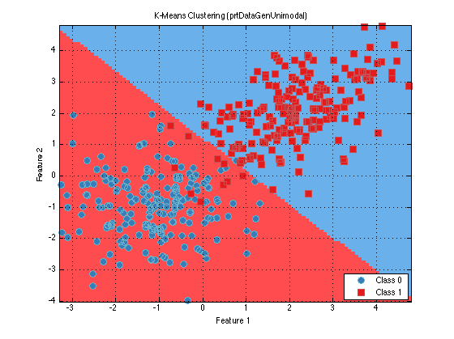

PRT Clustering Objects
Clustering is an operation very similar to classification. The main difference is that in clustering, the class labels are unknown. Instead of using known class labels, clustering sorts the data into discrete clusters, which are given integer labels. It is important to remember that when using clustering algorithms, the assignment of labels to clusters is completely arbitrary. For example, if you train a clustering algorithm with the same set of data twice, it is possible that the same sample could be labeled class 0 the first time, and class 1 the second time.
Contents
Clustering object methods and properties.
All prtCluster objects inherit the TRAIN, RUN, CROSSVALIDATE and KFOLDS functions from the prtAction object, for more information on these methods, refer to section on the prtEngine.
Using clustering objects
You use classifiers in the same manner as any prtAction object. The following example shows how to create a k-means cluster object, and plot the decision regions.
ds = prtDataGenUnimodal; % Load a dataset to use cluster = prtClusterKmeans % Create k-means clustering object cluster.nClusters = 2; % Set the number of clusters to 2 cluster = cluster.train(ds); plot(cluster)
cluster =
prtClusterKmeans
Properties:
name: 'K-Means Clustering'
nameAbbreviation: 'K-MeansCluster'
nClusters: 3
kmeansHandleEmptyClusters: 'remove'
distanceMetricFn: @prtDistanceEuclidean
clusterCenters: []
internalDecider: []
includesDecision: 0
isSupervised: 0
isCrossValidateValid: 1
verboseStorage: 1
showProgressBar: 1
isTrained: 0
dataSetSummary: []
dataSet: []
userData: [1x1 struct]
 Note that in the above example, it was necessary to set the number of clusters to 2. This is an obvious choice because it is known that the data contains 2 classes. Clustering can also be done on M-ary data sets. For example:
ds = prtDataGenMary; cluster.nClusters = 3; cluster = cluster.train(ds); plot(cluster)

In the above example, again the number of clusters in the orignal data was known to be 3, so the nClusters data member was set accordingly. Currently, all prtCluster algorithms require the number of clusters to be set before training.
Internal Deciders
Another important property of prtCluster objects is the internalDecider. Ordinarily, a prtCluster object outputs raw statistics based on the clustering algorithm, just like the prtClass objects do. However, you might just want the clustering object to also label the outputs. This can be done by setting the internalDecider property to be a prtDecision object. In this case, since our classifier is an M-ary classifier, we need to set the internal decider to be a prtDecisionMap object:
cluster.internalDecider = prtDecisionMap;
result = cluster.kfolds(ds,2); % Perform a simple 2-fold cross-validation
All clustering objects in the Pattern Recognition Toolbox have the same API as discussed above. The only difference is the underlying clustering algorithms used to train and run. For a list of all the different clustering algorithms, and links to their individual help entries, A list of commonly used functions